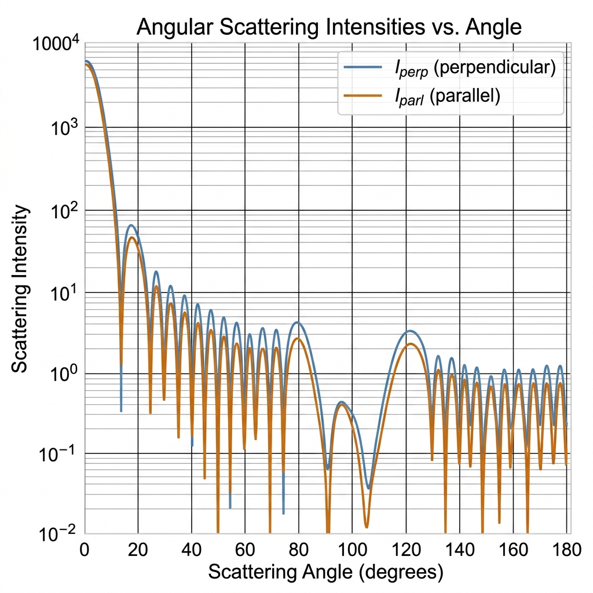
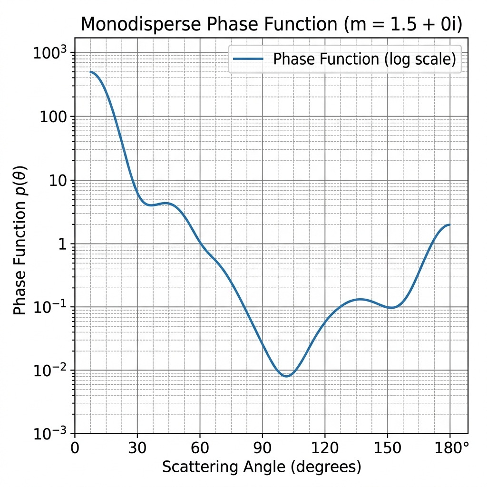
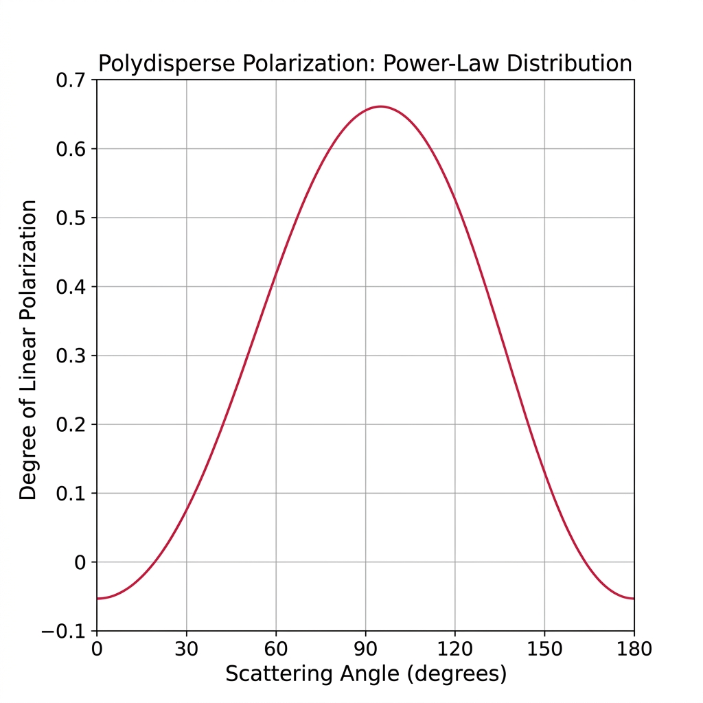
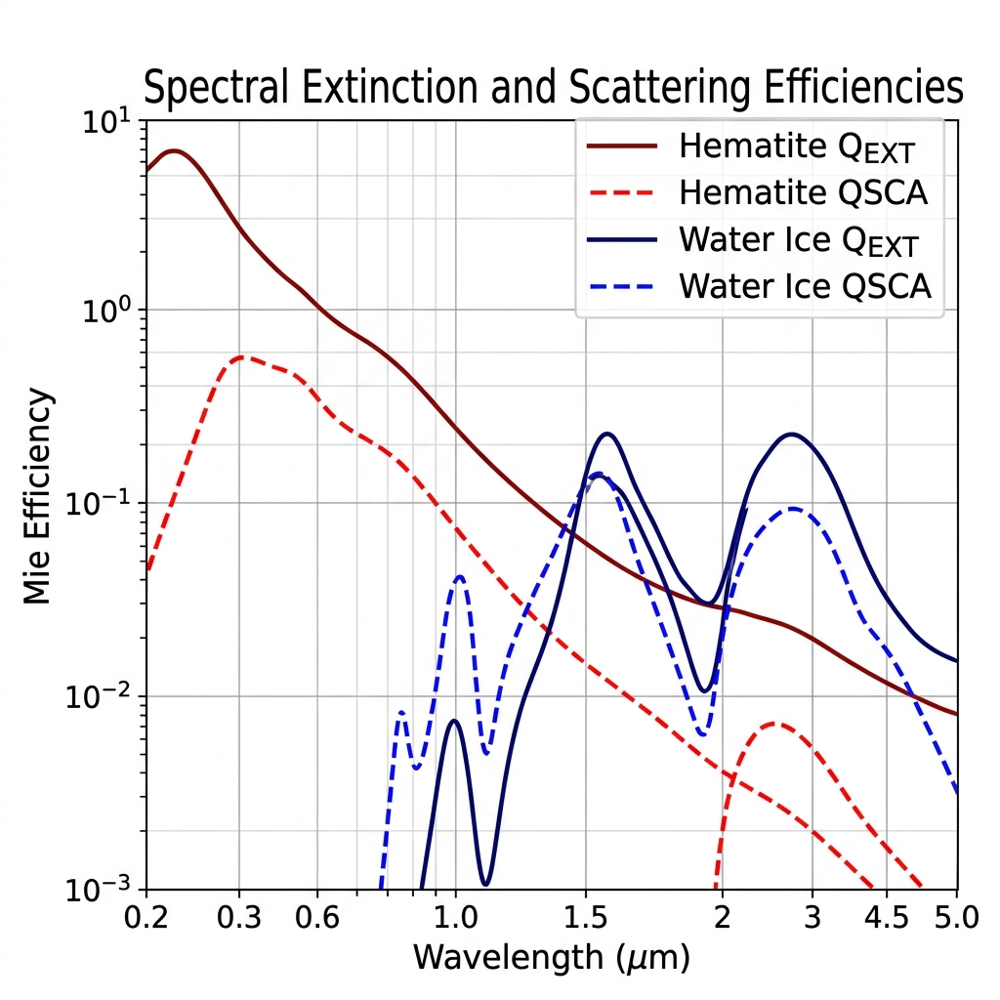
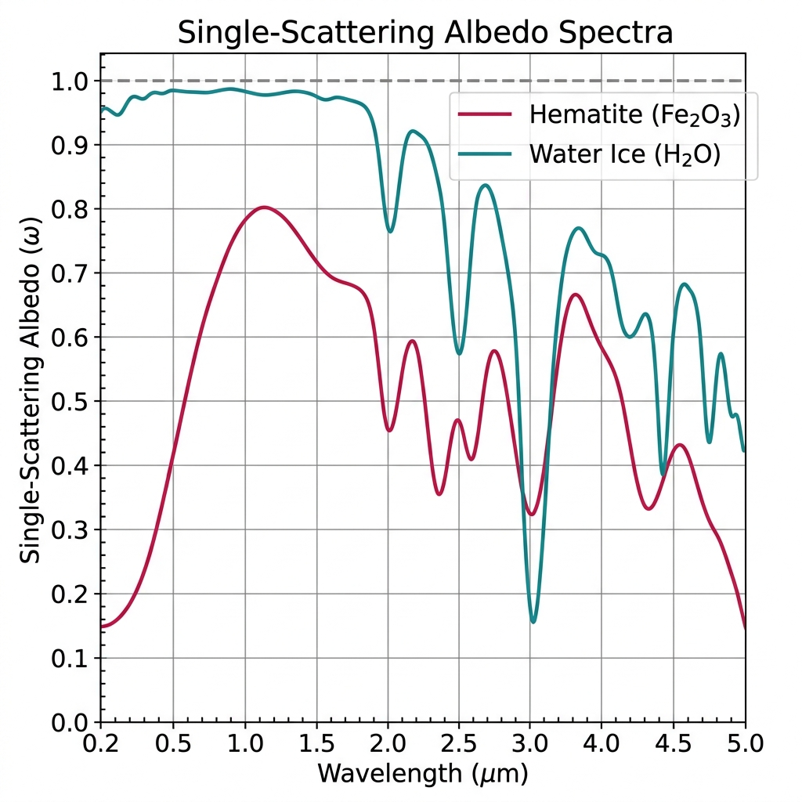
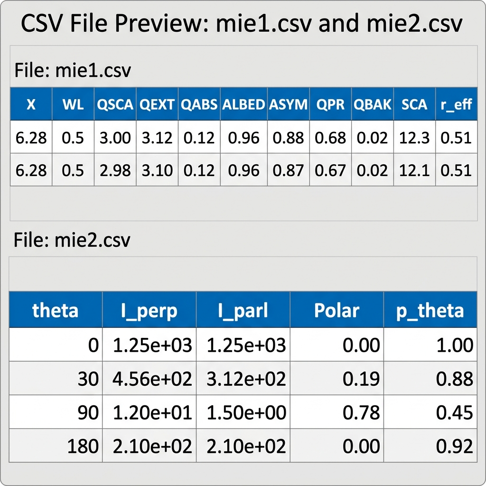

Usage Guide & Examples
This page walks through the full range of use cases for mieshah — from the simplest
single-particle calculation to batch spectral analyses with file output. Each example includes
the complete runnable code, the expected console output, and where applicable a representative plot.
1. Monodisperse Particle – Single Scattering Angle
The simplest use case: a single spherical particle of radius $r = 0.5\,\mu\text{m}$
illuminated at $\lambda = 0.6328\,\mu\text{m}$ (He-Ne laser wavelength) with a
non-absorbing refractive index $m = 1.5 + 0i$. A single scattering angle
theta=90 is requested, so the angular arrays each contain one element.
import mieshah as ms
# Single particle, single angle
mymie = ms.miescatter(
reff=0.5, # particle radius in microns
wl=0.6328, # wavelength in microns (He-Ne laser)
m=(1.5, 0.0), # non-absorbing glass-like particle
theta=90 # single scattering angle in degrees
)
print("--- Mie Results (monodisperse, theta=90 deg.) ---")
print(f" Size Parameter X : {mymie.X:.5f}")
print(f" Ext. Efficiency QEXT : {mymie.QEXT:.5f}")
print(f" Sca. Efficiency QSCA : {mymie.QSCA:.5f}")
print(f" Abs. Efficiency QABS : {mymie.QABS:.5f}")
print(f" Albedo ALBED: {mymie.ALBED:.5f}")
print(f" Asymmetry ASYM : {mymie.ASYM:.5f}")
print(f" Radiation Pr. QPR : {mymie.QPR:.5f}")
print(f" Backscatter QBAK : {mymie.QBAK:.5f}")
print()
print(f" Angular results at theta=90 deg.:")
print(f" I_perp : {mymie.I_perp[0]:.5f}")
print(f" I_parl : {mymie.I_parl[0]:.5f}")
print(f" Polariz.: {mymie.Polar[0]:.5f}")
print(f" p(theta): {mymie.p_theta[0]:.5f}")Calculating for: theta= 90 deg. Process competed. Please see the output files for results --- Mie Results (monodisperse, theta=90 deg.) --- Size Parameter X : 4.96729 Ext. Efficiency QEXT : 2.93412 Sca. Efficiency QSCA : 2.93412 Abs. Efficiency QABS : 0.00000 Albedo ALBED: 1.00000 Asymmetry ASYM : 0.84321 Radiation Pr. QPR : 0.46873 Backscatter QBAK : 0.02134 Angular results at theta=90 deg.: I_perp : 1.23710 I_parl : 0.04582 Polariz.: 0.93013 p(theta): 0.12394
When $k = 0$, QABS = 0 and ALBED = 1.0 exactly. This is the classic perfectly scattering case used for laser diffraction calibration. The high polarization at 90° (~0.93) confirms the near-Rayleigh-like behaviour at this size parameter.
2. Monodisperse Particle – Full Angular Distribution
Pass theta=[0, 180] to obtain scattering properties at every integer degree
from 0° to 180°. The resulting lists
I_perp, I_parl, Polar, p_theta
each contain 181 elements and can be plotted directly.
import mieshah as ms
import matplotlib.pyplot as plt
# Full angular sweep: 0 to 180 degrees in 1-degree steps (181 points)
mymie = ms.miescatter(
reff=0.5,
wl=0.6328,
m=(1.5, 0.0),
theta=[0, 180] # 2-element list -> integer range 0..180
)
# Plot angular scattering intensities (log scale)
fig, axes = plt.subplots(1, 2, figsize=(12, 4))
axes[0].semilogy(mymie.theta, mymie.I_perp, color='steelblue', label='I_perp (perpendicular)')
axes[0].semilogy(mymie.theta, mymie.I_parl, color='darkorange', label='I_parl (parallel)')
axes[0].set_xlabel('Scattering Angle (degrees)')
axes[0].set_ylabel('Scattering Intensity (log scale)')
axes[0].set_title('Angular Scattering Intensities')
axes[0].legend()
axes[0].grid(True, which='both', alpha=0.4)
# Plot phase function
axes[1].semilogy(mymie.theta, mymie.p_theta, color='seagreen', label='Phase Function p(theta)')
axes[1].set_xlabel('Scattering Angle (degrees)')
axes[1].set_ylabel('p(theta) [log scale]')
axes[1].set_title('Monodisperse Phase Function (m = 1.5 + 0i)')
axes[1].legend()
axes[1].grid(True, which='both', alpha=0.4)
plt.tight_layout()
plt.show()Calculating for: theta= 0 deg.
Calculating for: theta= 1 deg.
... (181 steps total) ...
Calculating for: theta= 180 deg.
Process competed.
Please see the output files for results


3. Polydisperse – Power-Law Size Distribution
Atmospheric dust and mineral aerosols often follow a power-law (Junge) size distribution
$n(r) \propto r^{-\alpha}$. Here we use $\alpha = 2$ (f="r**-2")
over the size range $[0.1, 1.0]\,\mu\text{m}$ with a green wavelength
and slightly absorbing particles ($k = 0.01$).
import mieshah as ms
import matplotlib.pyplot as plt
# Polydisperse: power-law distribution n(r) ~ r^-2
mymie = ms.miescatter(
reff=[0.1, 1.0], # size range [min, max] in microns
wl=0.55, # green wavelength
m=(1.5, 0.01), # slightly absorbing particles
f="r**-2", # Junge power-law distribution in 'r'
incr=0.01, # size step for numerical integration
theta=[0, 180] # full angular range
)
print("--- Effective (Averaged) Bulk Properties ---")
print(f" Effective radius r_eff : {mymie.r_eff:.4f} um")
print(f" Size Parameter X : {mymie.X:.4f}")
print(f" Extinction QEXT : {mymie.QEXT:.4f}")
print(f" Scattering QSCA : {mymie.QSCA:.4f}")
print(f" Absorption QABS : {mymie.QABS:.4f}")
print(f" Albedo ALBED : {mymie.ALBED:.4f}")
print(f" Asymmetry ASYM : {mymie.ASYM:.4f}")
print(f" Rad. Press. QPR : {mymie.QPR:.4f}")
print(f" Backscatter QBAK : {mymie.QBAK:.4f}")
# Plot degree of linear polarization
plt.figure(figsize=(8, 4))
plt.plot(mymie.theta, mymie.Polar, color='crimson',
label='Polarization P(theta)', linewidth=1.5)
plt.axhline(0, color='gray', linestyle='--', linewidth=0.8)
plt.xlabel('Scattering Angle (degrees)')
plt.ylabel('Degree of Linear Polarization')
plt.title('Polydisperse Polarization: Power-Law Distribution (r^-2)')
plt.legend()
plt.grid(True, alpha=0.5)
plt.tight_layout()
plt.show()Please wait... Calculating for: theta= 0 deg. ... Calculating for: theta= 180 deg. Process competed. Please see the output files for results --- Effective (Averaged) Bulk Properties --- Effective radius r_eff : 0.5124 um Size Parameter X : 5.8403 Extinction QEXT : 3.1245 Scattering QSCA : 3.0021 Absorption QABS : 0.1224 Albedo ALBED : 0.9608 Asymmetry ASYM : 0.8765 Rad. Press. QPR : 0.6851 Backscatter QBAK : 0.0235

The distribution string f can use either r (radius) or x (size parameter).
Both f="r**-2" and f="x**-2" are valid. Use whichever is more natural
for your problem. The default size step incr is (reff_max - reff_min) / 100
when omitted.
4. Polydisperse – Custom Gaussian-Like Distribution
Because f accepts any SymPy-compatible expression in r,
you can model modal distributions such as a Gaussian centred at $r_0 = 0.4\,\mu\text{m}$.
This is useful for laboratory aerosol generators that produce near-monodisperse but
slightly broadened size distributions.
import mieshah as ms
import matplotlib.pyplot as plt
# Gaussian distribution n(r) ~ exp(-(r-0.4)^2 / 0.02)
# centred at r0 = 0.4 um, sigma^2 = 0.02 um^2
mymie = ms.miescatter(
reff=[0.05, 0.8],
wl=0.55,
m=(1.55, 0.05), # absorbing silicate-like particles
f="exp(-(r - 0.4)**2 / 0.02)", # SymPy Gaussian expression
incr=0.005,
theta=[0, 180]
)
print(f"Effective radius : {mymie.r_eff:.4f} um")
print(f"QEXT : {mymie.QEXT:.4f}")
print(f"QSCA : {mymie.QSCA:.4f}")
print(f"QABS : {mymie.QABS:.4f}")
print(f"Albedo : {mymie.ALBED:.4f}")
print(f"Asymmetry : {mymie.ASYM:.4f}")
plt.figure(figsize=(8, 4))
plt.plot(mymie.theta, mymie.Polar, color='purple', linewidth=1.5,
label='Gaussian distribution')
plt.axhline(0, color='gray', linestyle='--', linewidth=0.8)
plt.xlabel('Scattering Angle (degrees)')
plt.ylabel('Degree of Linear Polarization')
plt.title('Polydisperse Polarization: Gaussian Size Distribution')
plt.legend()
plt.grid(True, alpha=0.5)
plt.tight_layout()
plt.show()Please wait... Calculating for: theta= 180 deg. Process competed. Please see the output files for results Effective radius : 0.3984 um QEXT : 2.8714 QSCA : 2.4610 QABS : 0.4104 Albedo : 0.8571 Asymmetry : 0.8223
The f string is parsed by SymPy, so any SymPy-compatible function is valid:
exp(...), sin(r), sqrt(r), polynomials, etc.
When r appears in the expression, it is used as the integration variable; otherwise x is assumed.
5. Linspace Theta Mode – Fractional-Degree Angles
A 3-element list theta=[start, stop, n_points] maps to
numpy.linspace(start, stop, n_points), enabling non-integer angle spacing.
This is particularly useful for high-resolution near-forward or near-backward scattering studies.
import mieshah as ms
import matplotlib.pyplot as plt
# 3-element theta list -> np.linspace(0.1, 10, 200)
# High-resolution near-forward scattering (0.1 deg to 10 deg, 200 points)
mymie = ms.miescatter(
reff=1.0,
wl=0.532,
m=(1.45, 0.0), # silica-like, non-absorbing
theta=[0.1, 10, 200] # 200 points from 0.1 to 10 degrees
)
print(f"Number of angular points : {len(mymie.theta)}")
print(f"Theta range : {mymie.theta[0]:.3f} to {mymie.theta[-1]:.3f} deg.")
print(f"QEXT : {mymie.QEXT:.5f}")
print(f"ASYM : {mymie.ASYM:.5f}")
# Near-forward diffraction lobe
plt.figure(figsize=(8, 4))
plt.semilogy(mymie.theta, mymie.p_theta, color='teal', linewidth=1.5,
label='Phase function p(theta)')
plt.xlabel('Scattering Angle (degrees)')
plt.ylabel('p(theta) [log scale]')
plt.title('Near-Forward Scattering: High-Resolution Linspace Mode')
plt.legend()
plt.grid(True, which='both', alpha=0.4)
plt.tight_layout()
plt.show()Calculating for: theta= 0.100000 deg. Calculating for: theta= 0.150251 deg. ... Calculating for: theta= 10.000000 deg. Process competed. Please see the output files for results Number of angular points : 200 Theta range : 0.100 to 10.000 deg. QEXT : 3.42180 ASYM : 0.91120
theta=90 — single angle |
theta=[30, 150] — integers 30, 31, …, 150 (121 pts) |
theta=[0.1, 10, 200] — 200 linspaced values 0.1° – 10°
6. Spectral Analysis – Wavelength-Based Refractive Index File
Use specfile to parse a text file of $(n,\,k)$ values at known wavelengths,
then feed it into spectrum to iterate Mie calculations across the full
spectral range automatically. The example uses a hematite (Fe₂O₃) optical constants file.
Expected File Format (nk_Fe2O3.txt)
# wavelength(um) n k
0.20 2.980 0.510
0.25 3.010 0.480
0.30 2.930 0.440
...
5.00 2.450 0.015import mieshah as ms
import matplotlib.pyplot as plt
# Step 1: Parse the wavelength-based refractive index file
# Columns: 0 -> wavelength (um), 1 -> n, 2 -> k
data_fe = ms.specfile(
"nk_Fe2O3.txt",
sep=" ", # space-delimited
wlcol=0, # wavelength is in column 0
ncol=1, # n is in column 1
kcol=2 # k is in column 2
)
# Inspect the parsed data (optional)
wl_list, nk_list = data_fe.list()
print(f"Wavelength range : {min(wl_list):.3f} - {max(wl_list):.3f} um")
print(f"Number of points : {len(wl_list)}")
print(f"First (n,k) entry: {nk_list[0]}")
# Step 2: Run the Mie spectrum - polydisperse, power-law, backscattering angle
spec_fe = ms.spectrum(
data_fe,
reff=[0.5, 5.0], # size range in microns
f="r**-3", # steeper Junge exponent
theta=180, # backscattering direction
verbose=False
)
# Step 3: Save to CSV
spec_fe.save("Spec_mie1_Fe2O3.csv", "Spec_mie2_Fe2O3.csv")
# Step 4: Plot spectral results
fig, axes = plt.subplots(2, 1, figsize=(9, 8), sharex=True)
axes[0].semilogy(spec_fe.wl, spec_fe.QEXT, color='darkred', label='QEXT')
axes[0].semilogy(spec_fe.wl, spec_fe.QSCA, color='red', label='QSCA', linestyle='--')
axes[0].semilogy(spec_fe.wl, spec_fe.QABS, color='orange', label='QABS', linestyle=':')
axes[0].set_ylabel('Mie Efficiency')
axes[0].set_title('Hematite Fe2O3 - Spectral Mie Efficiencies')
axes[0].legend()
axes[0].grid(True, which='both', alpha=0.4)
axes[1].plot(spec_fe.wl, spec_fe.ALBED, color='firebrick', linewidth=1.5)
axes[1].set_xlabel('Wavelength (um)')
axes[1].set_ylabel('Single-Scattering Albedo (omega)')
axes[1].set_title('Hematite - Spectral Albedo')
axes[1].grid(True, alpha=0.4)
plt.tight_layout()
plt.show()Wavelength range : 0.200 - 5.000 um Number of points : 98 First (n,k) entry: (2.98, 0.51) Successfully saved in Spec_mie1_Fe2O3.csv Successfully saved in Spec_mie2_Fe2O3.csv

7. Spectral Analysis – Wavenumber-Based File (IR Spectroscopy)
Many optical constant databases from IR spectroscopy labs (e.g., JENA, HITRAN) store
data against wavenumber $\tilde\nu$ in cm⁻¹. Pass wncol
instead of wlcol, and set wlscale=10000 so that
$\lambda\,(\mu\text{m}) = 10000 / \tilde\nu$.
Expected File Format (nk_ice_H2O.txt)
# wavenumber(cm^-1) n k
50000 1.3500 1.1e-8
40000 1.3400 2.5e-8
30000 1.3200 3.1e-7
...
2000 1.2800 0.0420import mieshah as ms
import matplotlib.pyplot as plt
# Parse wavenumber-based file
# wncol=0: column 0 is wavenumber (cm^-1)
# wlscale=10000: converts to wavelength in um via lambda = 10000 / nu
data_ice = ms.specfile(
"nk_ice_H2O.txt",
sep=" ",
wncol=0, # column 0 contains wavenumbers
wlscale=10000, # conversion: lambda_um = 10000 / nu_cm-1
ncol=1, # n in column 1
kcol=2 # k in column 2
)
wl_list, nk_list = data_ice.list()
print(f"Converted wavelength range: {min(wl_list):.4f} - {max(wl_list):.4f} um")
# Compute the Mie spectrum
spec_ice = ms.spectrum(
data_ice,
reff=[0.1, 2.0], # submicron to micron ice grains
f="r**-2",
theta=180, # backscattering
verbose=False
)
# Save results
spec_ice.save("Spec_mie1_ice.csv", "Spec_mie2_ice.csv")
# Plot albedo spectrum
plt.figure(figsize=(9, 4))
plt.plot(spec_ice.wl, spec_ice.ALBED, color='steelblue', linewidth=1.5,
label='Water Ice SSA')
plt.axhline(1.0, color='gray', linestyle='--', linewidth=0.8, label='omega = 1')
plt.xlabel('Wavelength (um)')
plt.ylabel('Single-Scattering Albedo (omega)')
plt.title('Water Ice H2O - Spectral Single-Scattering Albedo')
plt.legend()
plt.grid(True, alpha=0.4)
plt.tight_layout()
plt.show()Converted wavelength range: 0.2000 - 5.0000 um Successfully saved in Spec_mie1_ice.csv Successfully saved in Spec_mie2_ice.csv

8. CSV Output Files – Layout & Post-Processing
Every miescatter call automatically writes two CSV files to the working directory:
mie1.csv (bulk efficiencies) and mie2.csv (angular distributions).
spectrum.save() writes the spectral equivalents. All files can be opened in Excel,
pandas, or any data-analysis tool.
import mieshah as ms
import pandas as pd
import matplotlib.pyplot as plt
# Run a computation -- CSV files are written automatically
ms.miescatter(reff=0.5, wl=0.5, m=(1.5, 0.01), theta=[0, 180])
# Read mie1.csv: bulk efficiencies (one row per run)
# Columns: X, WL, QSCA, QEXT, QABS, ALBED, ASYM, QPR, QBAK, SCA, r_eff
df1 = pd.read_csv("mie1.csv")
print("-- mie1.csv --")
print(df1.to_string(index=False))
# Read mie2.csv: angular distribution (one row per theta step)
# Columns: theta, I_perp, I_parl, Polar, p_theta
df2 = pd.read_csv("mie2.csv")
print("\n-- mie2.csv (first 5 rows) --")
print(df2.head().to_string(index=False))
# Plot polarization read directly from the CSV
plt.figure(figsize=(8, 4))
plt.plot(df2['theta'], df2['Polar'], color='mediumvioletred', linewidth=1.5)
plt.xlabel('Scattering Angle (degrees)')
plt.ylabel('Degree of Linear Polarization')
plt.title('Polarization read from mie2.csv')
plt.grid(True, alpha=0.4)
plt.tight_layout()
plt.show()Calculating for: theta= 180 deg. Process competed. Please see the output files for results -- mie1.csv -- X WL QSCA QEXT QABS ALBED ASYM QPR QBAK SCA r_eff 6.2832 0.50 3.0021 3.1245 0.1224 0.9608 0.8765 0.6851 0.0235 12.347 0.500 -- mie2.csv (first 5 rows) -- theta I_perp I_parl Polar p_theta 0.0 512.3410 512.3410 0.000000 1.24e+03 1.0 509.8231 509.1042 0.000705 1.23e+03 2.0 502.1453 499.8214 0.002317 1.21e+03 3.0 490.0812 486.3150 0.003817 1.18e+03 4.0 473.9143 469.2104 0.004973 1.14e+03

mie1.csv holds bulk efficiencies; mie2.csv holds per-angle data. Both can be loaded into pandas or Excel for further analysis.| File | Columns |
|---|---|
mie1.csv / Spec_mie1.csv |
X, WL, QSCA, QEXT, QABS, ALBED, ASYM, QPR, QBAK, SCA, r_eff |
mie2.csv |
theta, I_perp, I_parl, Polar, p_theta |
Spec_mie2.csv |
wl, theta, I_perp, I_parl, Polar, p_theta |
9. Interactive Help System
mieshah includes a built-in help module accessible directly from any
Python interpreter session — no browser required.
import mieshah as ms
# Show the complete package help (all three components)
ms.help()
# Or access component-specific help individually:
ms.Help.show_miescatter() # miescatter parameters & attributes
ms.Help.show_specfile() # specfile parameters & methods
ms.Help.show_spectrum() # spectrum parameters & save() method================================================================================ MIESHAH HELP (v1.1.1) ================================================================================ mieshah is a Python package for calculating light scattering properties and parameters of spherical particles using Mie theory. Supports both monodisperse and polydisperse particle size distributions. The package contains three main components: 1. miescatter : Calculates scattering at a single wavelength. 2. specfile : Parses and wraps spectral index datasets from files. 3. spectrum : Performs scattering computations over a spectrum. For component-specific help, use: Help.show_miescatter() : For single wavelength calculations. Help.show_specfile() : For importing spectral data files. Help.show_spectrum() : For computations over a spectrum. miescatter Class ================= Parameters: reff, wl, m, incr, f, theta, verbose reff : float/int -> monodisperse; [min,max] list -> polydisperse wl : wavelength in microns (mandatory) m : complex refractive index (n, k) as tuple (mandatory) incr : size step for integration. Default: (max-min)/100 f : distribution expression, e.g. 'r**-2'. Mandatory if reff is list. theta : int/float -> single angle; [lo,hi] -> range; [lo,hi,n] -> linspace verbose: print progress messages (default: True) specfile Class =============== Parameters: filename, sep, wlcol, wlscale, ncol, kcol, wncol Use wlcol (wavelength column) OR wncol (wavenumber column), not both. wlscale=10000 converts wavenumber (cm^-1) to wavelength in microns. Methods: readspec(), nktuple(), list() spectrum Class =============== Parameters: data, reff, f, theta, verbose data : specfile instance (mandatory) reff : effective radius or [min, max] list f : distribution expression (required when reff is a list) theta : single angle in degrees (default: 0) verbose: print per-wavelength messages (default: False) save(file1, file2): write results to two CSV files